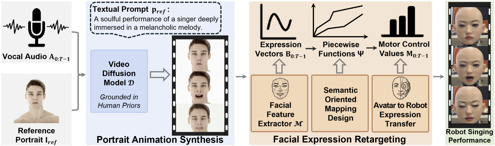

Equipping robotic faces with singing capabilities is crucial for empathetic Human-Robot Interaction. However, existing robotic face driving research primarily focuses on conversations or mimicking static expressions, struggling to meet the high demands for continuous emotional expression and coherence in singing. To address this, we propose a novel avatar-driven framework for appealing robotic singing. We first leverage portrait video generation models embedded with extensive human priors to synthesize vivid singing avatars, providing reliable expression and emotion guidance. Subsequently, these facial features are transferred to the robot via semantic-oriented mapping functions that span a wide expression space. Furthermore, to quantitatively evaluate the emotional richness of robotic singing, we propose the Emotion Dynamic Range metric to measure the emotional breadth within the Valence-Arousal space, revealing that a broad emotional spectrum is crucial for appealing performances. Comprehensive experiments prove that our method achieves rich emotional expressions while maintaining lip-audio synchronization, significantly outperforming existing approaches.

@inproceedings{xu2025singingbot,
title={SingingBot: An Avatar-Driven System for Robotic Face Singing Performance},
author={Xu, Zhuoxiong and Li, Xuanchen and Cheng, Yuhao and Xu, Fei and Yan, Yichao},
booktitle={Proceedings of the IEEE International Conference on Multimedia and Expo (ICME)},
year={2025}
}